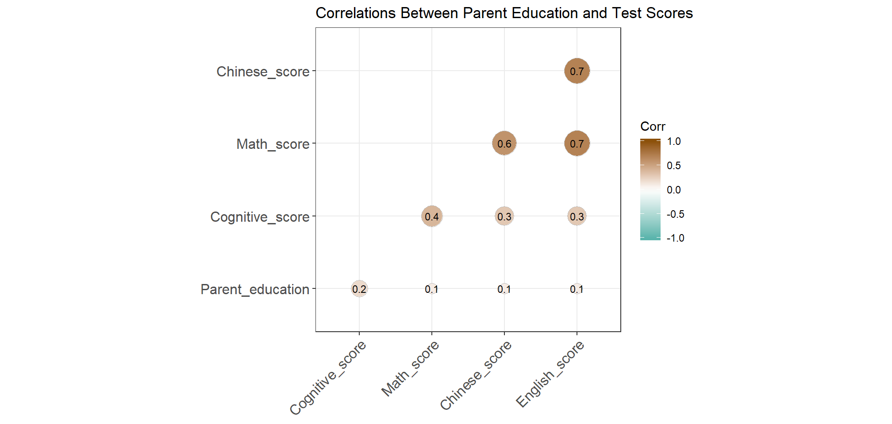

In “CEPS Dataset Inspection” page, I discuss my decision of selecting 60 schools in CEPS frame 1 subsample. In these schools, 5947 students and their parents, homeroom teachers, subject teachers, and school administrators participated both waves of survey. However, I need to limit the sample schools to public schools to avoid unoberserved differences between public and non-public schools. 55 public schools with their 5473 students are trimmed from the previous sample at this stage.
The table below shows some characteristics for these 55 schools such as the survey time (2013 fall or 2014 spring), region (east, middle, or west China), urbanicity (5 levels), number of computers and books available to students, enrollment, number of teachers having bachelor degree and up, and number of teachers whose professional status are advanced and up.
To answer my two research questions on the causal effects of homeroom teachers on student outcomes, I intend to take advantage of a unique quality in CEPS data - random or even placement of new students to homeroom.
In China, schools place new students into homerooms where they are managed by a homeroom teacher who typically follows them up till graduation. Random or even placement to homeroom in public elementary and middle schools is a policy enforced by chinese Ministry of Education, referring to sorting students into groups randomly or evenly (with equal average score) before homeroom teachers drawing lots from the student groups. However, not all the counties in the country restrictively regulate their schools, which results in some school not following the policy completely.
In CEPS baseline school administrator survey, there is a question asking “(whether) Randomly or evenly assign them (new students) into different classes”, while in teacher survey, the question is opposite, asking “Is the grade (you currently teach) divided into classes according to scores AT PRESENT?”. To the best I can to make sure my interested student sample was indeed randomly or evenly placed, I match and compare answers from teachers and administrators and only include the schools having consistent answers. Specifically, I create potential indicating variables from w1 school administrator and teacher survey and do an interaction check to keep the schools and homerooms that have TRUE on all the two indicators below: random_even_w1 from administrator w1 survey with TRUE = 1; random_even_tch_w1 from teacher w1 survey with TRUE = 1;
As a result, 40 out of 55 schools are selected (schid 64 is excluded as it only has one homeroom) at this stage. In other words, I select my sample of 4016 students from 40 public middle schools that I believe have randomly or evenly placed 7th graders into homerooms in 2013-2014 school year.
Discrete and continuous characteristics of sample schools:
Discrete and continuous characteristics of sample students:

Next, I inspect my sample data by comparing homeroom class size and student w1 scores to check whether the two homerooms in each school are indeed equal in observable ways. Maybe need more check but as you’ll see, these two checks already raised my concern.
Here is the point I get stuck - the plots do not answer the question whether these differences in class size and scores are significant. t-test is not feasible.